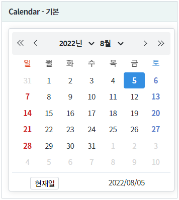
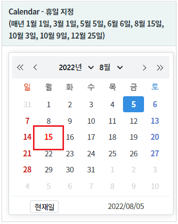
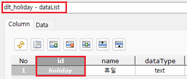
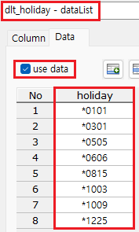
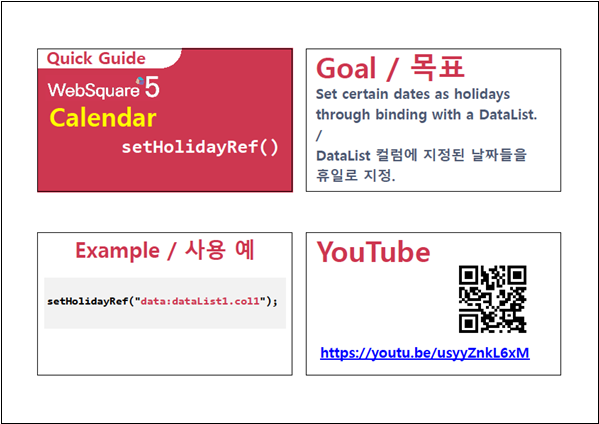

휴일을 지정하는 예제입니다. 지정할 휴일 데이터를 DataList에 정의하고 컴포넌트와 연결합니다.
컴포넌트에 휴일이 지정되지 않은 상태
컴포넌트에 휴일이 지정된 상태 - 휴일 데이터를 DataList와 연결
설정별로 구성된 컴포넌트의 휴일 설정을 비교합니다. 이 예제는 매년 01월 01일, 03월 01일, 05월 05일, 06월 06일, 08월 15일, 10월 03일, 10월 09일, 12월 25일을 휴일로 지정하였습니다.
그림 1.브라우저(Chrome) 실행 예시 - 휴일이 지정되지 않은 상태

그림 2.브라우저(Chrome) 실행 예시 - 휴일이 지정된 상태

STEP1. DataList 정의하기
컴포넌트의 휴일과 연결할 DataList를 정의합니다.
DataList를 생성하고 ID를 dlt_holiday로 할당합니다.
필수로 정의될 컬럼은 1가지로 아래와 같습니다. 컬럼의 ID는 환경에 맞게 정의할 수 있습니다.holiday : 휴일로 지정할 날짜
그림 3.웹스퀘어5 SP5 스튜디오의 DataCollection 탭 예시

생성한 DataList에서 사용할 데이터를 정의합니다. (예제에서는 화면에서 직접 데이터를 생성하였습니다.)
날짜 형식은 YYYYMMDD(연월일)이며 매년 동일 날짜에 지정하는 경우 년도를 *로 정의합니다.그림 4.웹스퀘어5 SP5 스튜디오의 DataCollection 탭 예시 - 데이터 정의

STEP1. DataList를 휴일 목록에 지정하기
원하는 시점에 스크립트로 휴일을 지정합니다. 예제의 경우 화면이 로딩 후 지정하기 위해 함수 scwin.onpageload에 작성했습니다.
//컴포넌트 cal_exam2에 DataList dlt_holiday의 컬럼 holiday를 휴일로 지정 //(매년 1월 1일, 3월 1일, 5월 5일, 6월 6일, 8월 15일, 10월 3일, 10월 9일, 12월 25일) cal_exam2.setHolidayRef("data:dlt_holiday.holiday");
setHolidayRef( setHolidayRef )
setHoliday( dateStr , removeHoliday )
[웹스퀘어5 SP5 개발 가이드] Calendar
링크 : https://docs1.inswave.com/sp5_user_guide/8df43d1f59fab704#56b80cc9fef2c150
[웹스퀘어5 SP5 개발 가이드] Calendar DataList와의 바인딩을 통한 지정 (setHoliday())
링크 : https://docs1.inswave.com/sp5_user_guide/8df43d1f59fab704#bb590d4e71b3503d
Calendar DataList와의 바인딩을 통한 지정 (setHoliday())
링크 : https://youtu.be/usyyZnkL6xM
